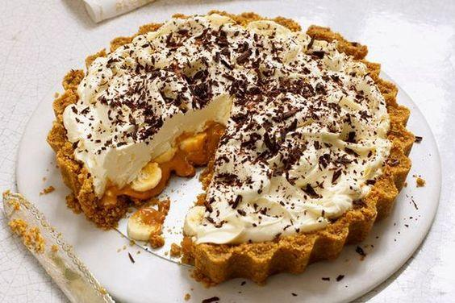

BANOFFEE

200 g de bolacha de maisena
100 g de manteiga amolecida
4 bananas caturras (ou nanicas) maduras
2 latas de leite condensado
1 pote de nata
4 colheres (sopa) rasas de açúcar
canela em pó a gosto
achocolatado em pó a gosto
Mode de preparo
Faça uma farofa com as bolachas de maisena e a manteiga.
Espalhe no fundo de um refratário.
Coloque para assar em forno preaquecido a 200ºC por 7 minutos.
Fatie as bananas no sentido do comprimento.
Coloque as latas de leite condensado em uma panela de pressão por 35 minutos. Depois deixe esfriar.
Bata a nata e o açúcar na batedeira até virar um creme
Montagem
Depois de frio, espalhe o leite condensado sobre a massa na forma.
Cubra o leite condensado com a banana fatiada.
Sobre a banana, espalhe o creme da nata.
Alise bem e, com uma peneira fina, polvilhe com chocolate em pó e um pouco de canela.
Leve à geladeira por 3 horas.